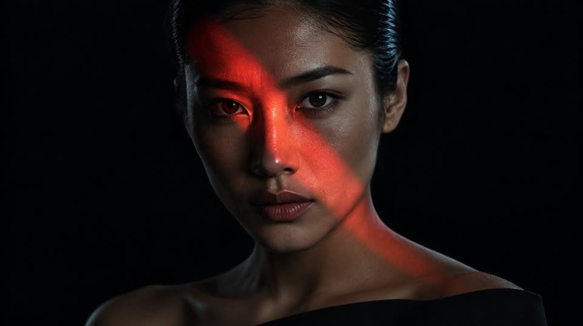

One blade of crimson light: a hard slit-gobo stripe crossing one eye in a near-black editorial portrait
AES-093Aesthetic / GenreGPT Image 2.5by @CharaspowerAI2026-11-19

A GPT Image 2.5 lighting-led portrait that specifies the light like a gaffer: a saturated crimson band from "a hard optical spotlight and a narrow slit gobo" that must follow facial geometry (changing width over the nose, breaking into shadow), a cool-white fill "approximately three stops below the red accent", a faint neutral shoulder edge, and guard lines ("do not clip the red channel", "no neon tubes in frame, no digital face paint").
Prompt
Create an extraordinary photorealistic cinematic editorial portrait, vertical 4:5, full bleed, no text. An adult East Asian woman with slicked-back black hair, a strong facial structure and a calm, uncompromising expression. Tight portrait from collarbones to just above the head. Her face is almost frontal, rotated a few degrees toward camera left, eyes looking directly into the lens. Bare shoulders above a simple matte-black architectural neckline. A precisely controlled diagonal blade of saturated crimson light crosses one eye, the bridge of the nose and the opposite cheek. Produce this effect with a hard optical spotlight and a narrow slit gobo. The band must follow the actual facial geometry: changing width across the nose, breaking into shadow where the face occludes it, never resembling a flat red stripe painted onto the image. An extremely restrained cool-white soft source reveals the unlit eye and the natural color of the shadow-side skin, approximately three stops below the red accent. The surrounding face falls into rich near-black tones. A faint neutral edge separates one shoulder from the background without tracing the entire silhouette. 85mm portrait lens at eye level. The red diagonal is the dominant graphic gesture. Both eyes remain within the plane of sharp focus. Deep black background with generous darkness above one shoulder. No additional props. Visible pores, fine facial hair, subtle moisture along the lower eyelid, natural lips and realistic hairline. Preserve texture inside the red illumination; do not clip the red channel into a featureless patch. Intense but disciplined color, deep dimensional shadows, subtle cinematic grain, elegant highlight roll-off. A luxury editorial portrait with psychological tension. No neon tubes in frame, no digital face paint, no plastic skin, no decorative smoke.
Our Seedance 2.5 adaptation
[ADAPTED for Seedance 2.5 by Grok Bot; not the creator's prompt. Follows the official BytePlus Seedance 2.5 prompt guide and its official sd25-pe prompt-optimizer skill: parameters only on the API line (not in the prompt body), subject + action + scene, then visuals, camera (move, subject, start, direction, arrival) and sound; only the source's own exclusions are kept.] API: duration 5, ratio 16:9 (taken from the first frame), resolution 1080p (4k for a final), generate_audio true; first_frame = the AES-093 still. 【Subject】The adult East Asian woman exactly as in the first frame: slicked-back black hair, matte-black architectural neckline, calm uncompromising expression, eyes into the lens. 【Action】She holds still, then turns her head a few degrees further toward camera left and blinks once; the crimson band slides across her face as she turns, changing width over the nose and breaking into shadow where the face occludes it. 【Camera】Locked-off at eye level, tight collarbones-to-crown framing, both eyes in focus; no camera movement. 【Visuals】One hard crimson slit-gobo band as the dominant light, a cool-white fill about three stops below on the shadow side, a faint neutral shoulder edge, near-black background, subtle cinematic grain; texture kept inside the red, never clipped flat. 【Sound】Near silence: low room tone and one soft breath. No neon tubes in frame, no digital face paint, no plastic skin, no decorative smoke.
Tags: GPT Image 2.5, lighting design, slit gobo, crimson accent, three-stop ratio, near-black background, 85mm, 4:5, luxury editorial, image